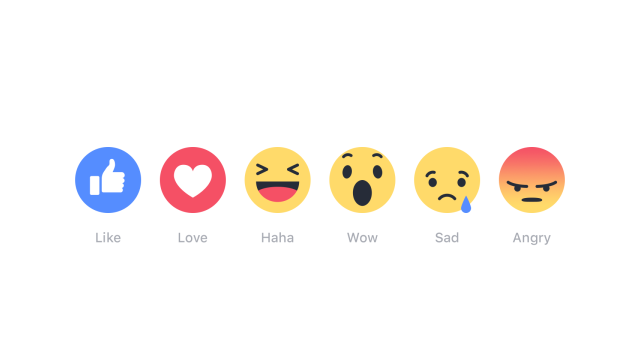

Angelo Basile
09-05-2017
…but some are not. Why?
THERE IS NO HIRING BIAS AGAINST WOMAN IN TECH, THEY JUST SUCK AT INTERVIEWS (Breitbart)
MONTI PORTA SFIGA (Libero)
[Prime Minister Monti brings bad luck]
APRÈ LE NAUFRAGE DE LE PEN, MACRON ARCHIFAVORI (Le Figaro)
[After Le Pen's bad performance in the debate, Macron is the favored candidate]
noun, con·tro·ver·sy, ˈkän-trə-ˌvər-sē
a discussion marked especially by the expression of opposing views (from Merriam-Webster)
facebook pages of newspapers
is expensive
takes time and money
(I don't have any)

take user's reactions as annotations
| text | LIKE | LOVE | ANGRY |
|---|---|---|---|
| Le grandi tappe della Guerra fredda | 379 | 1 | 3 |
| #Fisco, case ecologiche ed e-bike | 393 | 4 | 3 |
when are they interesting?
how much information they encode?
Time for some statistics!
H(X)=∑i − P(i)log2P(i)
| LOVE | ANGRY | HAHA | WOW | SAD | |
|---|---|---|---|---|---|
| some text | 1 | 3 | 1 | 1 | 1 |
| some other text | 4 | 3 | 11 | 1 | 1 |
| LOVE | ANGRY | HAHA | WOW | SAD | Total(N) |
|---|---|---|---|---|---|
| 1 | 3 | 1 | 1 | 1 | 7 |
Remember:
P(i)=count(i)/N
H(X)=∑i − P(i)log2P(i)
reactions <- c(1 ,3 ,1 ,1 ,1)entropy <- function(vector) {
vprob <- c(vector/sum(vector)) # compute probs
h <- -sum(vprob*log2(vprob)) # compute H
return (h)
}Remember:
H(X)=∑i − P(i)log2P(i)
reactions <- c(1,3,1,1,1)
vprob <- c(reactions/sum(reactions))
print(vprob)
print(sum(vprob))
print(-sum(vprob*log2(vprob)))
[1] 0.1428571 0.4285714 0.1428571 0.1428571 0.1428571
[1] 1
[1] 2.128085entropy(c(1,1))
[1] 1
entropy(c(100,1))
[1] 0.08013605
entropy(c(1))
[1] 0df <- read.csv('newsreactions.csv', header=TRUE)
df = df[-c(1)] # remove the first column, it's an index and R recreates it anyway
str(df)
'data.frame': 421 obs. of 8 variables:
$ message : Factor w/ 413 levels "'Io sto con la sposa', il Magazine ANSA sul documentario di Gabriele #DelGrande, #FreeDelGrande - http://ow.ly/NiTB30b4J0e",..: 144 109 308 110 229 111 108 373 233 412 ...
$ description: Factor w/ 291 levels "\n"," ","'Contestazione al contenuto di questa legge totalmente assurda' (ANSA)",..: 6 270 184 24 99 8 24 278 92 105 ...
$ LIKE : int 47 11 8 89 39 559 27 2539 135 122 ...
$ LOVE : int 0 0 1 10 0 43 0 48 4 7 ...
$ ANGRY : int 0 0 0 2 9 15 2 2 48 0 ...
$ HAHA : int 0 0 0 1 12 12 0 8 1 0 ...
$ WOW : int 1 0 0 2 0 1 0 219 7 0 ...
$ SAD : int 0 0 0 0 0 1 3 0 33 0 ...df['entropy'] = apply(df[c('LOVE','ANGRY','HAHA','WOW','SAD')], # where to apply
1, # (1: rowwise; 2: columnwise)
entropy) # function to applyhead(subset(df, select=-c(message, description)))
LIKE LOVE ANGRY HAHA WOW SAD entropy
1 47 0 0 0 1 0 NaN
2 11 0 0 0 0 0 NaN
3 8 1 0 0 0 0 NaN
4 89 10 2 1 2 0 NaN
5 39 0 9 12 0 0 NaN
6 559 43 15 12 1 1 1.51781sorted = df[with(df, # create new (sorted) df
order(-entropy)),] # by entropy, increasing (see minus sign)head(sorted$message)
[1] Le grandi tappe della Guerra fredda
[2] #Corea Nord: #Usa non escludono raid in caso di test nucleare\nhttp://ow.ly/DCnZ30b7wlg
[3] Ecco cosa è appena successo ad Amici di Maria De Filippi\n\n(e cos'ha detto Morgan prima di lasciare lo studio)
[4] #25Aprile, #Anpi: "Festa di tutti gli italiani". Roma divisa, due celebrazioni. Segui il LIVEBLOG http://ow.ly/Ueqk30b7IC4
[5] Il Papa Francesco in #Egitto non userà auto blindate http://ow.ly/gcAb30b7CIc
[6] Dall'Inizio dell'anno nel nostro Paese si sono verificati oltre 1470 casi e il 33% ha avuto complicanze. Nell'elenco anche Germania e Belgio. Nel settembre scorso l'America era stata dichiarata «libera dal morbillo endemico»
413 Levels: 'Io sto con la sposa', il Magazine ANSA sul documentario di Gabriele #DelGrande, #FreeDelGrande - http://ow.ly/NiTB30b4J0e ...